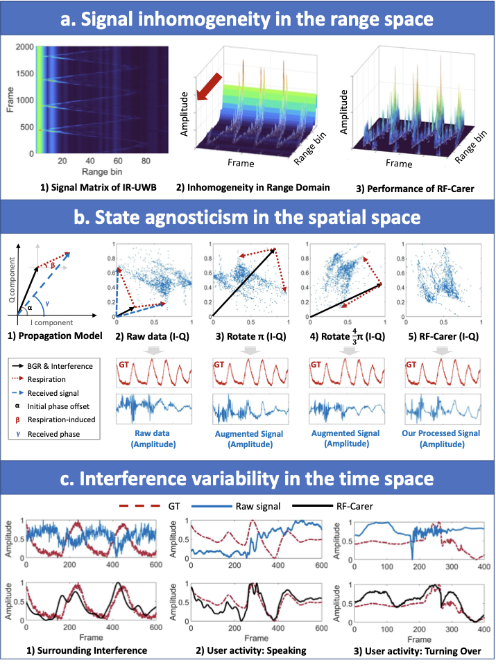
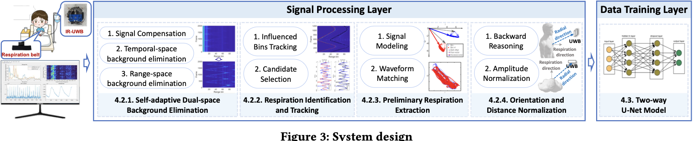
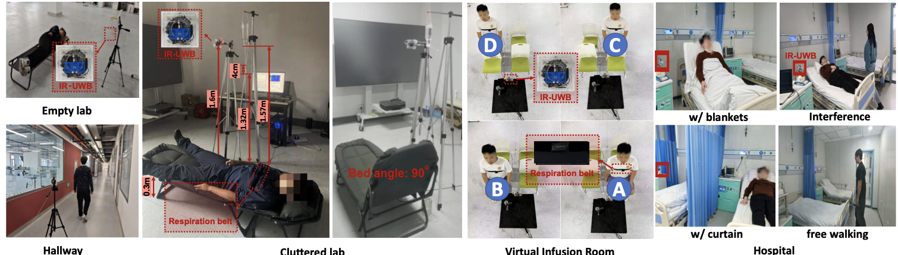
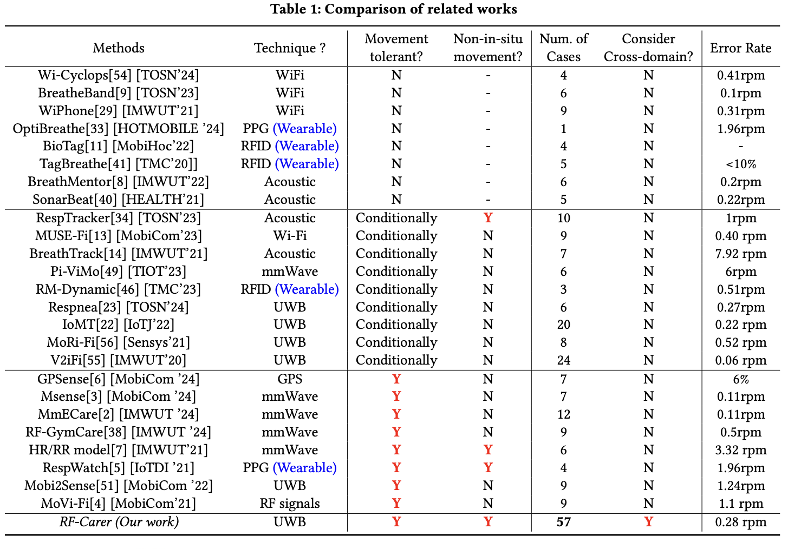
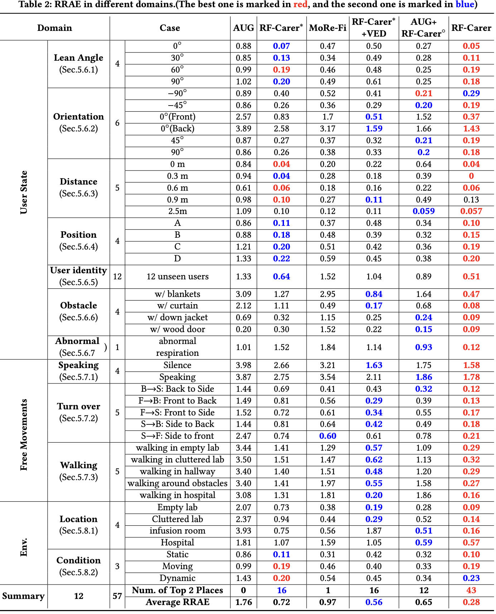
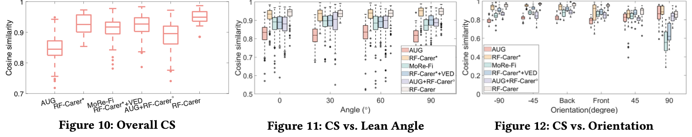
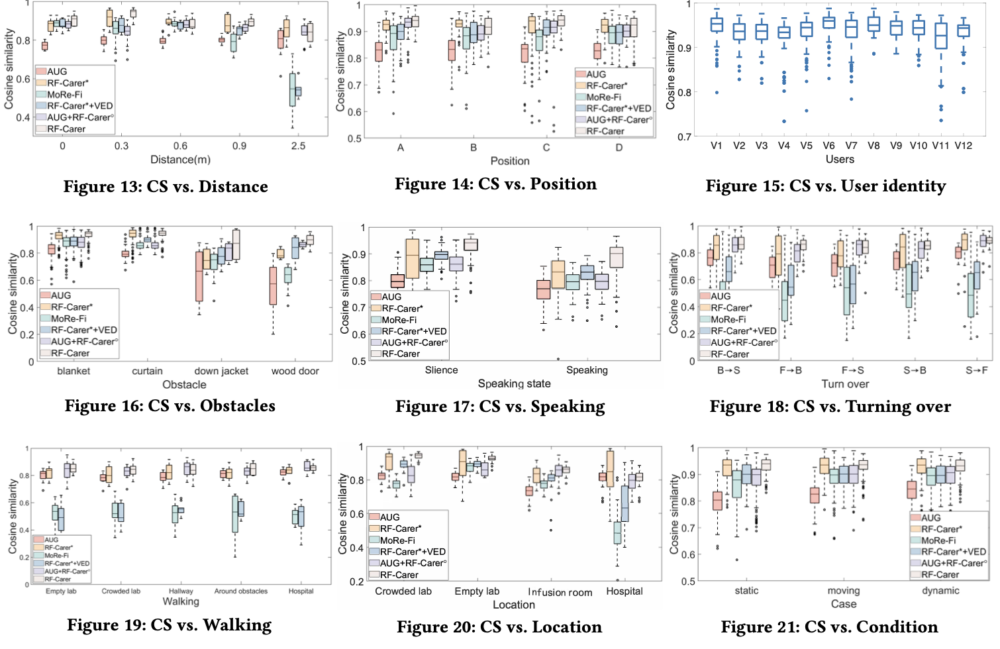
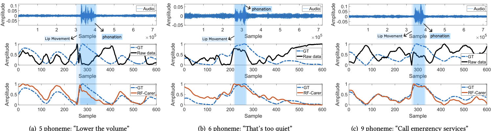
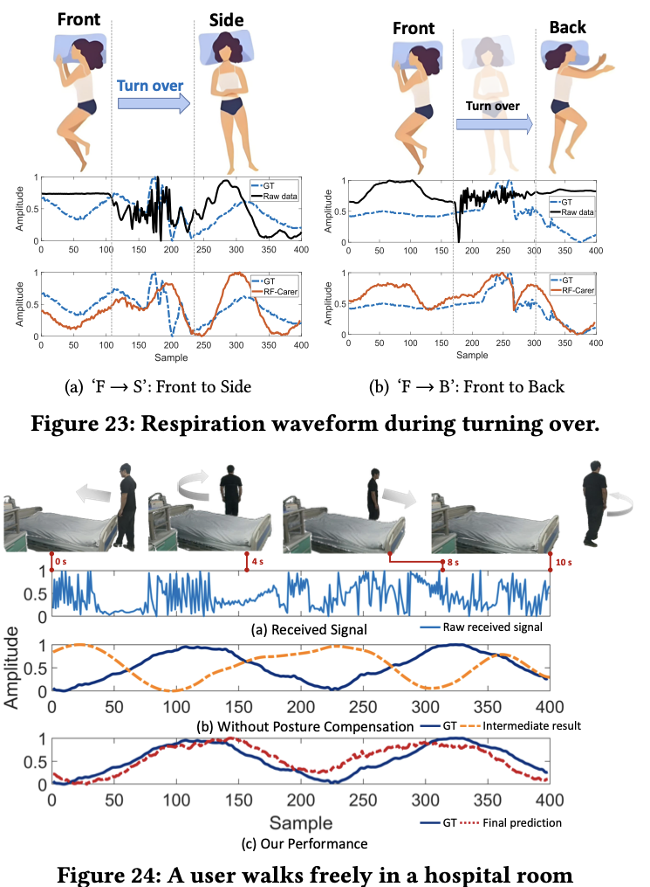
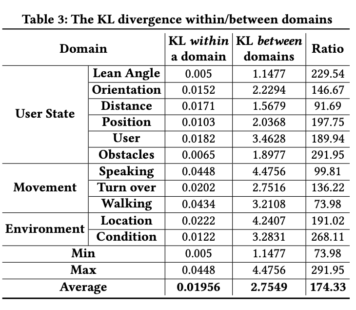

12 domains, 57 cases
Publication
Zero-Effort Cross-Domain Wireless Respiration Monitoring Under Free Movements With Commercial UWB Devices
Ge Wang, Jiazheng Chen, Zhe Chen, Fei Wang, Cong Zhao, Jianan Wang, Han Ding, Cui Zhao, Wei Xi, Jinsong Han
RF-Carer is a zero-effort cross-domain wireless respiration monitoring system that uses commercial UWB devices, an explainable propagation model, and contrastive feature alignment to generalize across movements, users, and environments without extra retraining.
56 hours from 39 volunteers
0.28 rpm error
Overview
Respiratory monitoring with wireless RF signals is promising for healthcare, smart cockpits, sleep monitoring, and daily-life wellbeing. The practical obstacle is domain shift: a model trained in one setting often breaks when the user moves, changes posture, lies at a different distance or orientation, meets dynamic interference, or enters a new environment.
RF-Carer targets this deployment gap with a zero-effort cross-domain system built on commercial IR-UWB devices. It trains once, then directly handles unseen users, movements, obstacles, and environments without extra data collection or domain-specific retraining. The central design choice is to push generalization into the signal-processing layer: heterogeneous UWB observations are transformed into a unified signal form before a lightweight contrastive bi-channel U-Net estimates respiration.
Why Cross-Domain Respiration Is Hard
Wireless respiration sensing needs to extract a subtle periodic chest-motion signal from RF reflections. In real deployments, that signal is mixed with factors that are irrelevant to respiration but change strongly across domains:
- Range-space non-uniformity: different range bins have different attenuation, phase offsets, and background reflections.
- Spatial state agnosticism: the system does not know the user's orientation, position, posture, or trajectory beforehand.
- Time-varying interference: free movement, speaking, turning over, and moving objects can disturb the raw signal at unpredictable times.

Main Contributions
- Proposes a fully zero-effort cross-domain respiration monitoring system that can be trained once and directly reused in unseen domains.
- Builds an explainable propagation model to transform heterogeneous RF signals from unknown domains into a unified representation in the signal processing layer.
- Introduces feature-space alignment with noisy-dimension suppression through contrastive learning, making the model more robust to irrelevant environmental and motion factors.
- Demonstrates adaptation across 12 domains and 57 practical cases, including unconstrained body movement, unknown users, user-state changes, obstacles, and untrained environments.
- Releases code and a 56-hour dataset from 39 volunteers.
RF-Carer System
RF-Carer has two layers. The signal processing layer removes or compensates domain-dependent components before learning. It performs signal compensation, temporal-space and range-space background elimination, respiration identification and tracking, preliminary respiration extraction, and orientation/distance normalization. The data training layer then uses a two-way U-Net with contrastive learning to align respiration-related features and suppress noisy dimensions.

Method Highlights
- Self-adaptive dual-space background elimination: compensates range-dependent signal variation and removes temporal and range-space background components.
- Consistent factor matching: preliminarily extracts respiration signals without assuming a fixed respiration period or regular waveform shape.
- Backward reasoning: compensates posture and distance changes using signal geometry rather than prior domain labels.
- Contrastive bi-channel U-Net: further aligns useful features and suppresses noisy dimensions after signal normalization.
Dataset And Evaluation
The authors implement RF-Carer on a Novelda X4M05 IR-UWB radar operating at 7.3 GHz with a 1.5 GHz bandwidth. Ground truth is collected by a respiration sensing belt synchronized with the UWB radar. The one-fits-all model is trained with cluttered-lab data from 12 volunteers and evaluated in new domains.
| Item | Setup |
|---|---|
| Participants | 39 volunteers |
| Dataset scale | 56 hours |
| Training domain | Cluttered lab |
| Training volunteers | 12 |
| Time window | 30 s |
| Test coverage | 12 domains, 57 cases |
| Metrics | Cosine similarity (CS), respiration rate absolute error (RRAE) |

Comparison With Related Work
Compared with recent respiration-monitoring systems using Wi-Fi, acoustic, RFID, mmWave, PPG, GPS, and UWB signals, RF-Carer is positioned as the first RF-based respiration system in the table that supports movement tolerance, non-in-situ movement, and explicit cross-domain evaluation together.

Core Results
The main quantitative table reports RRAE across user states, free movements, and environments. RF-Carer obtains the best or second-best result in 43 of 57 cases and reaches the lowest average RRAE, 0.28 rpm, across all domains.
| Method | Average RRAE | Top-2 Cases | Interpretation |
|---|---|---|---|
| AUG | 1.76 rpm | 0 | Virtual sample augmentation alone is not enough for unseen domains. |
| RF-Carer* | 0.72 rpm | 16 | Signal processing alone already improves cross-domain robustness. |
| MoRe-Fi | 0.97 rpm | 1 | Learning-based isolation is less stable under broad domain shift. |
| RF-Carer* + VED | 0.56 rpm | 16 | Processed signals help even when paired with an existing VED model. |
| AUG + RF-Carer model | 0.65 rpm | 12 | The proposed model helps, but raw augmented input remains limiting. |
| RF-Carer | 0.28 rpm | 43 | Signal processing plus contrastive learning gives the strongest overall result. |

Cosine Similarity Analysis
In the source-domain overall evaluation, RF-Carer reaches 0.9522 average CS, higher than AUG (0.8453), RF-Carer* (0.9291), MoRe-Fi (0.912), RF-Carer* + VED (0.9178), and AUG + RF-Carer model (0.8895). The user-state tests further show robustness to lean angle, orientation, distance, position, user identity, obstacles, and abnormal respiration.


Free-Movement Waveforms
RF-Carer is evaluated under challenging free-movement settings, including speaking, turning over, and free walking. The waveform visualizations show that the raw signal can be heavily disturbed, while RF-Carer still recovers respiration curves close to the ground truth.
| Scenario | Reported RF-Carer Finding |
|---|---|
| Speaking | 0.8774 CS under voice-command interference |
| Turning over | 0.8572 average CS across five turning actions |
| Walking | 0.8481 average CS across five walking scenarios |
| Location | Best performance in empty lab, cluttered lab, and infusion room |
| Environmental condition | 0.931 average CS across static, moving, and dynamic conditions |


Domain Difference
The paper also measures KL divergence to confirm that the evaluated domains are genuinely different. The average KL divergence within a domain is 0.01956, while the average KL divergence between domains is 2.7549, a ratio of 174.33.

Takeaways
- Signal processing is not just preprocessing here; it is the main generalization mechanism that maps heterogeneous UWB data into a more unified form.
- The full system outperforms either signal processing alone or learning alone, suggesting that RF-Carer benefits from both explainable modeling and feature-space alignment.
- The strongest evidence is the breadth of evaluation: 12 domains, 57 cases, 39 volunteers, 56 hours of data, and realistic free-movement settings.
- The method is especially relevant for deployment settings where calibration, recollection, or retraining is too expensive.
Key Numbers
| Item | Value |
|---|---|
| Dataset | 56 hours from 39 volunteers |
| Evaluation breadth | 12 domains and 57 cases |
| Average RRAE | 0.28 rpm |
| Top-2 count in Table 2 | 43 of 57 cases |
| Overall source-domain CS | 0.9522 |
| Average KL between-domain / within-domain ratio | 174.33 |
Resources
- Practical situations figure
- Main challenges figure
- System design figure
- Experiment setup figure
- RRAE domain table
- ACM Official Page
- Code and dataset
{kind=link}
{kind=link}
{kind=link}
{kind=link}
{kind=link}
Citation
@inproceedings{poster-zero-effort-cross-domain-wireless-respiration-monitoring-under-free-body-movement,
title = {Zero-Effort Cross-Domain Wireless Respiration Monitoring Under Free Movements With Commercial UWB Devices},
author = {Ge Wang and Jiazheng Chen and Zhe Chen and Fei Wang and Cong Zhao and Jianan Wang and Han Ding and Cui Zhao and Wei Xi and Jinsong Han},
booktitle = {Proceedings of the ACM/IEEE International Conference on Embedded Artificial Intelligence and Sensing Systems (SenSys '26)},
year = {2026}
}